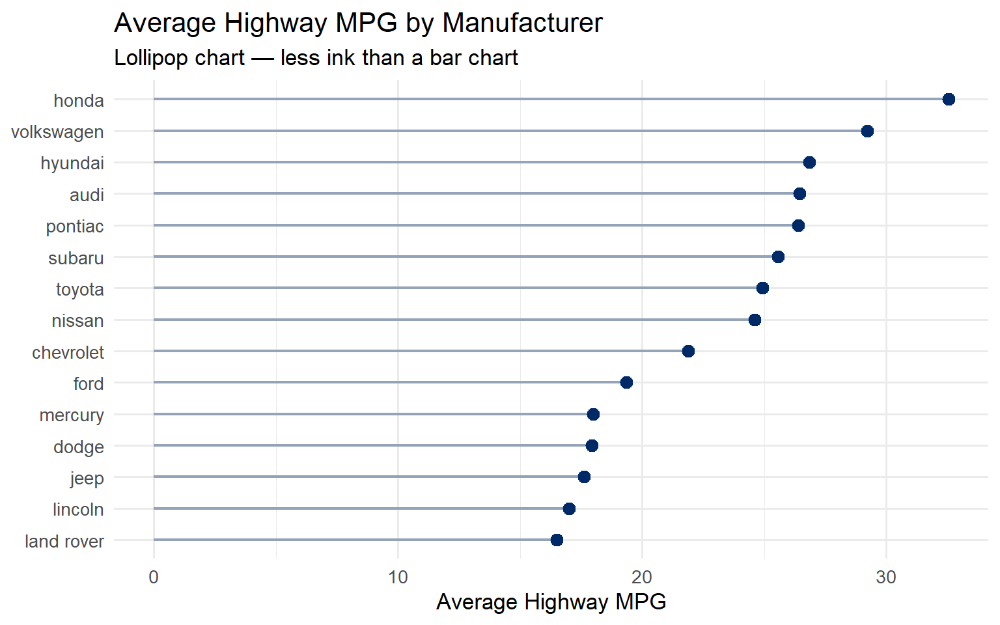
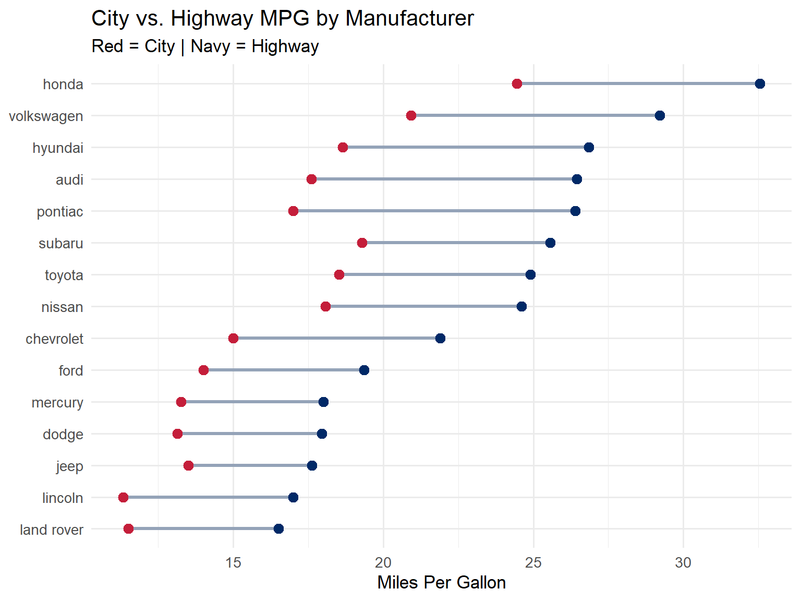
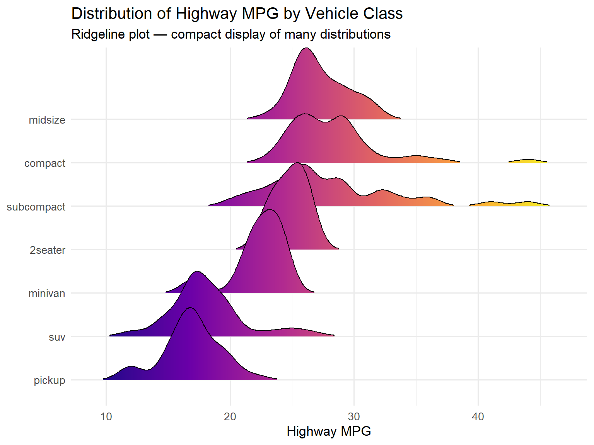
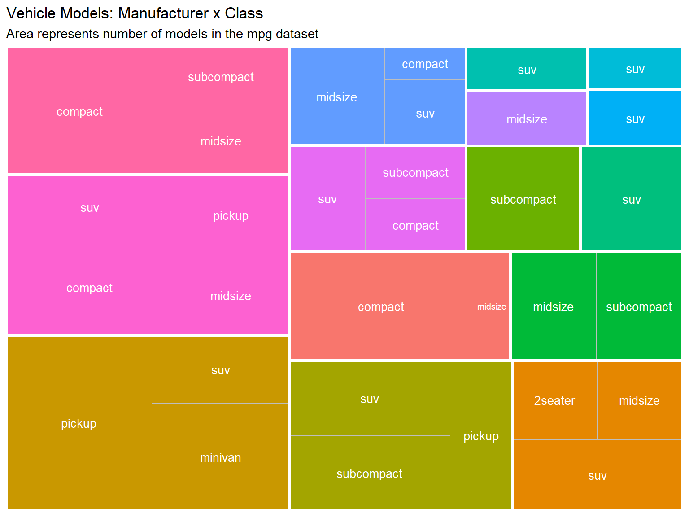
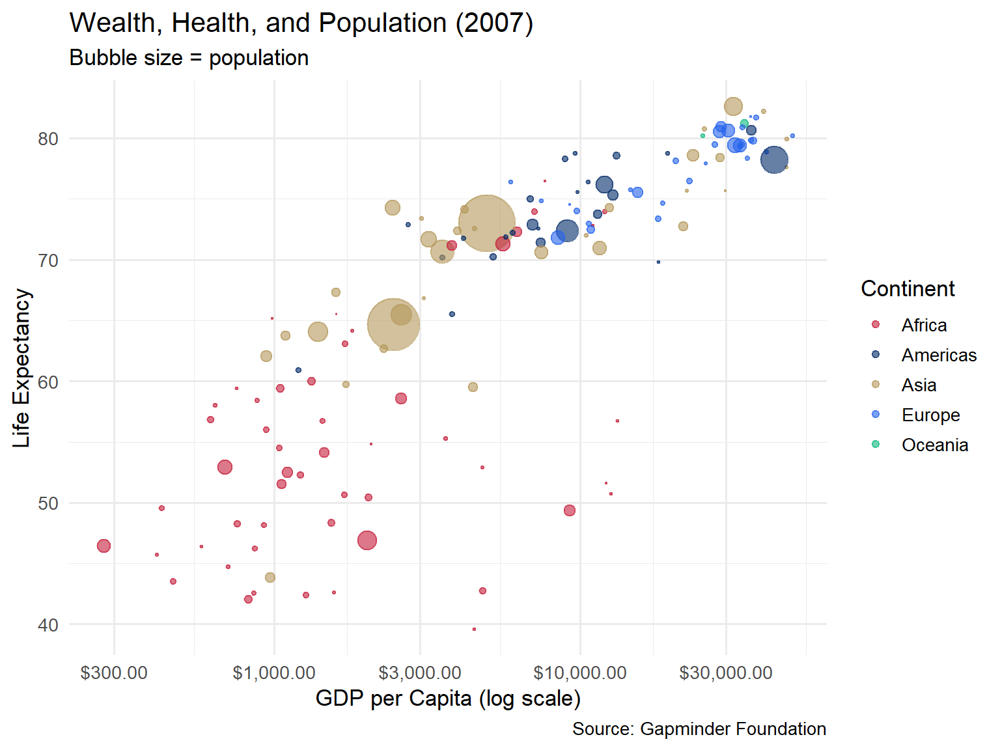
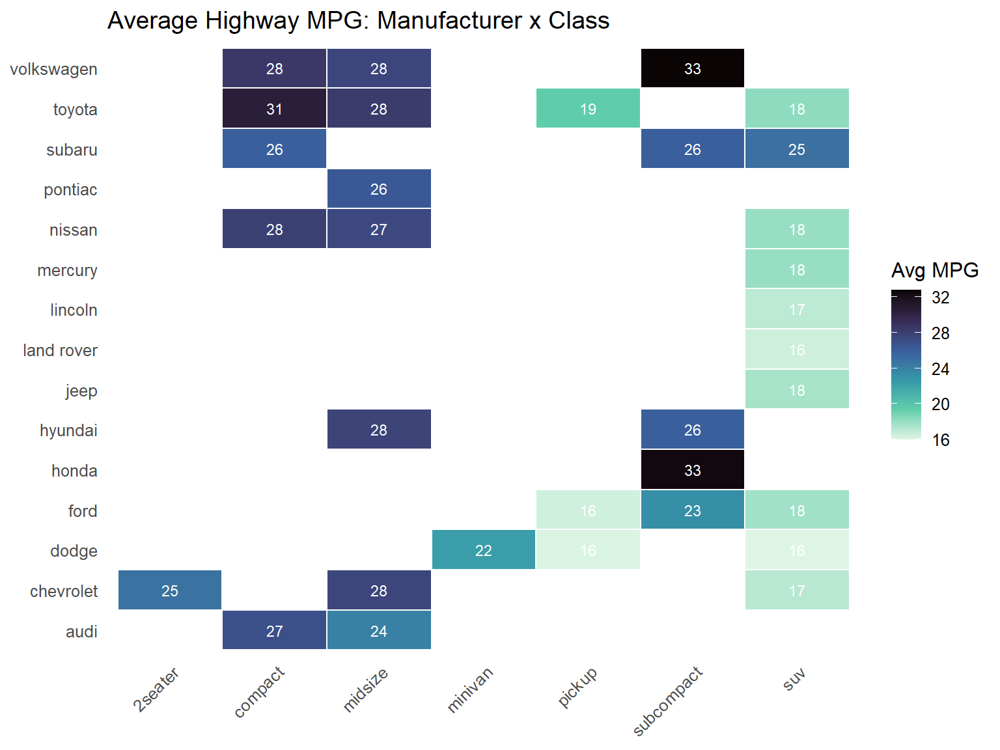
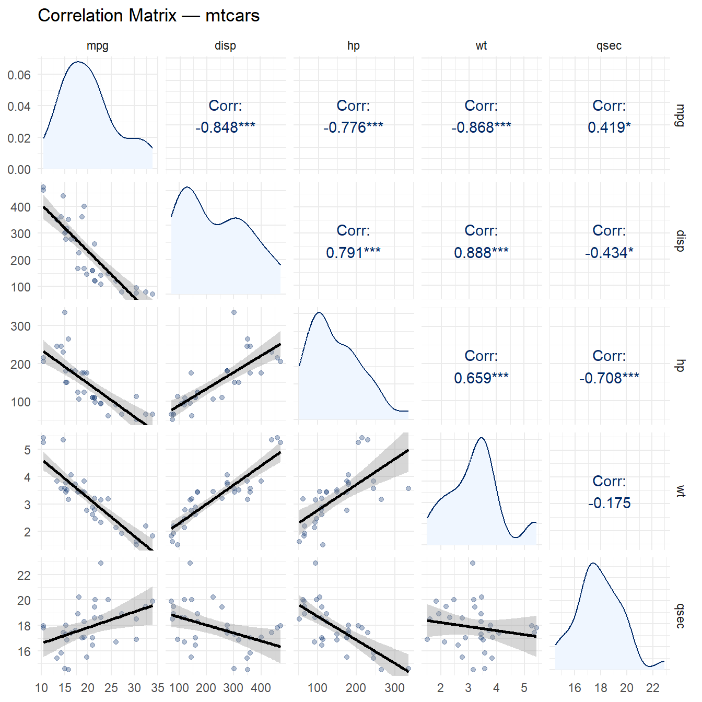
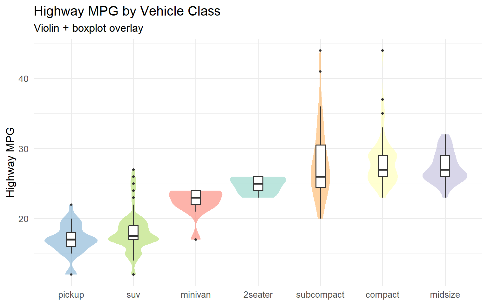

By the end of this week, you will be able to:
Before we begin, load the core packages we will use throughout this week. Several chart types require specialized packages that extend ggplot2. If you have not installed them yet, see the Common Errors box below.
Common Errors You May Encounter This Week
This week uses several extension packages. If you run into errors, check this list first:
Error: could not find function "geom_density_ridges_gradient"
This function lives in the ggridges package, which is not
part of the tidyverse. You need to install it once and then load it:
Error: could not find function "geom_treemap"
This function lives in the treemapify package. Install and
load it:
ggpairs() takes forever to run / R appears
frozen The ggpairs() function computes pairwise
plots for every combination of columns. If you pass a dataset with many
columns, the computation time grows quadratically. Always use
select() to pick only 4–5 numeric columns before passing to
ggpairs():
Bubble chart sizes look wrong / small countries
invisible Use scale_size_area() instead of
scale_size_continuous(). The scale_size_area()
function ensures that the area of each bubble is proportional
to the data value, which is the perceptually correct mapping. With
scale_size_continuous(), the radius is mapped
linearly, causing larger values to appear disproportionately
huge.
Heatmap text is unreadable / labels disappear into dark
tiles Adjust the size parameter in
geom_text() to make labels larger or smaller. On dark
tiles, switch the text color to "white" or a
light value. You can also use conditional coloring:
Or simply pick a text color that contrasts well with your palette
(e.g., "white" on dark sequential scales).
The single most important decision in data visualization is choosing the right chart type. A beautiful chart that uses the wrong encoding is worse than a plain chart that uses the right one. The chart type you select should be driven entirely by the relationship you want to show in your data.
Here is a framework for thinking about chart selection:
There is no universal “best” chart. The best chart is the one that most clearly communicates the specific insight you want your audience to take away. A bar chart is not inherently better or worse than a treemap – it depends on the question you are answering.
Each of the following sections introduces a chart type, explains when it is most useful, and provides working R code you can adapt for your own projects.
Lollipop charts are an elegant alternative to bar charts. They convey the same information – a categorical variable mapped to a quantitative value – but with far less ink. Edward Tufte would approve: the data-to-ink ratio is much higher.
Use a lollipop chart when you have a ranked comparison of values across categories, especially when you have many categories where thick bars would feel heavy.
mpg %>%
group_by(manufacturer) %>%
summarise(avg_hwy = mean(hwy)) %>%
mutate(manufacturer = fct_reorder(manufacturer, avg_hwy)) %>%
ggplot(aes(x = avg_hwy, y = manufacturer)) +
geom_segment(aes(x = 0, xend = avg_hwy, yend = manufacturer),
color = "#94a3b8", linewidth = 0.8) +
geom_point(color = "#002967", size = 3) +
labs(title = "Average Highway MPG by Manufacturer",
subtitle = "Lollipop chart — less ink than a bar chart",
x = "Average Highway MPG", y = NULL) +
theme_minimal(base_size = 13)
The lollipop chart is built from two geoms layered together:
geom_segment() draws the thin line (the “stick”) from
zero to the data valuegeom_point() draws the dot (the “candy”) at the
endNotice that we use fct_reorder() to sort the
manufacturers by their average MPG. This is critical – an unsorted
lollipop chart is much harder to read. Always sort by the quantitative
variable unless there is a natural ordering (like months or rankings)
that takes priority.
When to choose a lollipop over a bar chart: Lollipop charts shine when you have 8 or more categories. With fewer categories, a standard bar chart is fine. With many categories, the thin stems of a lollipop chart reduce visual clutter significantly.
Dumbbell charts (also called DNA charts or connected dot plots) show the difference between two values for each category. They are ideal for before/after comparisons, paired measurements, or showing the gap between two groups.
The “dumbbell” shape – two dots connected by a line – naturally draws the eye to the distance between the two values, making it easy to compare gaps across categories.
dumbbell_data <- mpg %>%
group_by(manufacturer) %>%
summarise(city = mean(cty), highway = mean(hwy)) %>%
mutate(manufacturer = fct_reorder(manufacturer, highway))
ggplot(dumbbell_data) +
geom_segment(aes(x = city, xend = highway, y = manufacturer, yend = manufacturer),
color = "#94a3b8", linewidth = 1.2) +
geom_point(aes(x = city, y = manufacturer), color = "#C41E3A", size = 3) +
geom_point(aes(x = highway, y = manufacturer), color = "#002967", size = 3) +
labs(title = "City vs. Highway MPG by Manufacturer",
subtitle = "Red = City | Navy = Highway",
x = "Miles Per Gallon", y = NULL) +
theme_minimal(base_size = 13)
The segment connects the two values, and the colored dots mark each endpoint. The color legend is embedded in the subtitle to keep the chart clean. Notice how easy it is to see which manufacturers have the largest gap between city and highway fuel economy.
Dumbbell charts are underused. Many analysts default to grouped bar charts for paired comparisons, but dumbbell charts are almost always more readable. The connecting line makes the comparison explicit, while grouped bars force the viewer to mentally bridge the gap.
Ridgeline plots display the distribution of a variable across multiple groups, stacked vertically with slight overlap. They are one of the most visually striking chart types in the ggplot2 ecosystem, and they are remarkably effective at revealing distributional differences.
The name “joy plot” comes from the iconic cover of Joy Division’s Unknown Pleasures album, which featured a similar stacked-ridge visualization of radio pulsar data.
ggplot(mpg, aes(x = hwy, y = fct_reorder(class, hwy, .fun = median), fill = after_stat(x))) +
geom_density_ridges_gradient(scale = 2, rel_min_height = 0.01) +
scale_fill_viridis_c(option = "plasma") +
labs(title = "Distribution of Highway MPG by Vehicle Class",
subtitle = "Ridgeline plot — compact display of many distributions",
x = "Highway MPG", y = NULL) +
theme_minimal(base_size = 13) +
theme(legend.position = "none")
The scale parameter controls how much the ridges
overlap. A value of 2 means each ridge can extend up to twice the
allocated row height. The rel_min_height parameter trims
the tails to avoid distracting wisps at the edges.
The gradient fill using after_stat(x) maps the x-axis
value to a color, reinforcing the positional encoding with a color
encoding. This is a form of redundant encoding – using
two visual channels for the same variable – which can improve
readability.
When to use ridgeline plots: They work best when you have 5–15 groups and want to compare the full shape of each distribution. With fewer groups, consider overlapping density plots or faceted histograms. With more groups, the overlap becomes too dense to read.
Treemaps display hierarchical or part-to-whole relationships using nested rectangles. The area of each rectangle is proportional to a quantitative variable, making treemaps an effective way to show composition and relative size simultaneously.
Treemaps are particularly useful when you have two levels of hierarchy (e.g., manufacturer and class, or department and team) and want to show how subcategories contribute to larger groups.
mpg %>%
count(manufacturer, class) %>%
ggplot(aes(area = n, fill = manufacturer, subgroup = manufacturer, label = class)) +
geom_treemap() +
geom_treemap_text(color = "white", place = "centre", size = 10) +
geom_treemap_subgroup_border(color = "white", size = 3) +
labs(title = "Vehicle Models: Manufacturer x Class",
subtitle = "Area represents number of models in the mpg dataset") +
theme(legend.position = "none")
The treemapify package provides ggplot2-compatible geoms
for treemaps. geom_treemap() draws the filled rectangles,
geom_treemap_text() adds labels inside each rectangle, and
geom_treemap_subgroup_border() draws thicker borders around
the top-level grouping (manufacturer) to make the hierarchy visible.
Treemaps vs. pie charts: Both show composition, but treemaps are far more effective because we can judge rectangular areas more accurately than circular arc lengths. Treemaps also scale to many more categories and support nested hierarchies.
A bubble chart is a scatterplot where a third variable controls the size of each point. When done well, bubble charts can pack an impressive amount of information into a single graphic. The most famous example is Hans Rosling’s Gapminder visualization of global health and wealth.
gapminder %>%
filter(year == 2007) %>%
ggplot(aes(x = gdpPercap, y = lifeExp, size = pop, color = continent)) +
geom_point(alpha = 0.6) +
scale_x_log10(labels = scales::dollar_format()) +
scale_size_area(max_size = 15, guide = "none") +
scale_color_manual(values = c("Africa" = "#C41E3A", "Americas" = "#002967",
"Asia" = "#B4975A", "Europe" = "#2563eb", "Oceania" = "#10b981")) +
labs(title = "Wealth, Health, and Population (2007)",
subtitle = "Bubble size = population",
x = "GDP per Capita (log scale)", y = "Life Expectancy",
color = "Continent",
caption = "Source: Gapminder Foundation") +
theme_minimal(base_size = 13)
Several design decisions make this chart work:
scale_size_area(): This ensures that
the area (not the radius) of each bubble is proportional to the
population, which is the perceptually correct mapping.Caution with bubble charts: Do not use more than one size variable. Human perception of area is imprecise, so bubble charts work best when the size variable is used for rough comparisons (“China is much bigger than Norway”) rather than precise readings. If you need precision, use a different encoding.
Heatmaps use color intensity to represent values in a matrix. They are excellent for spotting patterns, clusters, and outliers in data that has two categorical dimensions and one quantitative dimension.
mpg %>%
group_by(manufacturer, class) %>%
summarise(avg_hwy = mean(hwy), .groups = "drop") %>%
ggplot(aes(x = class, y = manufacturer, fill = avg_hwy)) +
geom_tile(color = "white", linewidth = 0.5) +
geom_text(aes(label = round(avg_hwy, 0)), size = 3, color = "white") +
scale_fill_viridis_c(option = "mako", direction = -1, na.value = "#f1f5f9") +
labs(title = "Average Highway MPG: Manufacturer x Class",
fill = "Avg MPG", x = NULL, y = NULL) +
theme_minimal(base_size = 12) +
theme(axis.text.x = element_text(angle = 45, hjust = 1),
panel.grid = element_blank())
Key elements of a good heatmap:
na.value
ensures that empty cells are visually distinct from low-value
cells.The pattern of missing tiles (where no manufacturer makes a vehicle in that class) is itself informative – it reveals the market segmentation strategy of each brand.
A correlation matrix visualizes the pairwise
relationships between all numeric variables in a dataset. The
GGally package provides ggpairs(), which
creates a matrix of scatterplots, correlation coefficients, and density
curves in a single call.
mtcars %>%
select(mpg, disp, hp, wt, qsec) %>%
ggpairs(
upper = list(continuous = wrap("cor", color = "#002967")),
lower = list(continuous = wrap("smooth", alpha = 0.3, color = "#002967")),
diag = list(continuous = wrap("densityDiag", fill = "#eff6ff", color = "#002967"))
) +
labs(title = "Correlation Matrix — mtcars") +
theme_minimal(base_size = 11)
The matrix has three regions:
This layout is efficient because the upper and lower triangles are mirror images – they show the same pairs, just in different forms. Together, they give you both the number and the shape of each relationship.
Reading correlations: Look for the strongest
relationships first. In the mtcars data, wt and
mpg have a strong negative correlation (heavier cars get
worse mileage), while disp and hp have a
strong positive correlation (bigger engines tend to be more powerful).
These are exactly the patterns you would expect from domain knowledge,
which is reassuring.
Violin plots combine the summary statistics of a boxplot with the distributional shape of a density plot. The “violin” shape shows where the data is concentrated, while the embedded boxplot marks the median and interquartile range.
ggplot(mpg, aes(x = fct_reorder(class, hwy, .fun = median), y = hwy, fill = class)) +
geom_violin(alpha = 0.6, color = NA) +
geom_boxplot(width = 0.15, fill = "white", outlier.size = 1) +
scale_fill_brewer(palette = "Set3") +
labs(title = "Highway MPG by Vehicle Class",
subtitle = "Violin + boxplot overlay",
x = NULL, y = "Highway MPG") +
theme_minimal(base_size = 13) +
theme(legend.position = "none")
The combination of violin and boxplot is more informative than either alone:
Notice that we set color = NA on the violin to remove
the outline and fill = "white" on the boxplot so it sits
cleanly inside the violin shape.
When you are faced with a new dataset and need to choose a chart type, work through these questions:
“What is my primary question?”
| I want to… | Consider these chart types |
|---|---|
| Compare values across groups | Bar chart, lollipop chart, dumbbell chart |
| Show a distribution | Histogram, density plot, violin, ridgeline |
| Show a relationship | Scatterplot, bubble chart, heatmap |
| Show composition / parts-whole | Stacked bar chart, treemap, waffle chart |
| Show change over time | Line chart, area chart, sparkline |
“How many categories do I have?”
“Who is my audience?”
The “one more chart” rule: If you have time, always try at least one alternative chart type for your data. You may discover that a different encoding reveals a pattern you missed. Visualization is an iterative process.
“Men and Women for Others” – Chart Choice as an Act of Service
Choosing the right chart type is not merely a technical skill – it is an act of service to your audience. When you select a visualization that clearly communicates a pattern, you empower others to understand and act. When you choose a chart that obscures or misleads, you fail in that responsibility.
St. Ignatius spoke of Cura Personalis – care for the whole person. In the context of data visualization, this means considering your audience’s background, literacy, and needs. A ridgeline plot may be beautiful and information-rich, but if your audience has never seen one before, a simpler chart with careful annotation may serve them better. The goal is not to showcase your technical skills but to illuminate truth.
The wrong chart can mislead; the right one illuminates. As you practice building different chart types this week, ask yourself: Am I choosing this chart because it serves my audience, or because it looks impressive? The answer to that question is the difference between decoration and communication.
Week 4 Exercises
Exercise 1: Lollipop Chart with Gapminder
Using the gapminder package, filter the data to the year
2007 and a single continent of your choice. Create a lollipop chart
showing life expectancy by country, sorted from highest to lowest. Use
Gonzaga navy (#002967) for the dots and a light gray for
the stems. Add a meaningful title and subtitle.
Fill in the blanks in the starter code below:
library(gapminder)
gapminder %>%
filter(year == 2007, continent == "___") %>%
mutate(country = fct_reorder(country, lifeExp)) %>%
ggplot(aes(x = lifeExp, y = country)) +
geom_segment(aes(x = 0, xend = ___, yend = ___),
color = "#94a3b8", linewidth = 0.8) +
geom_point(color = "___", size = 3) +
labs(title = "___",
subtitle = "___",
x = "Life Expectancy (years)", y = NULL) +
theme_minimal(base_size = 12)Hints:
xend in geom_segment() should be the
same variable mapped to the x-axis.yend should be the same variable mapped to the
y-axis.#002967.Exercise 2: Ridgeline Plot of Diamond Prices
Using the built-in diamonds dataset, create a ridgeline
plot showing the distribution of price by cut
quality. Use fct_reorder() to sort the cuts by median
price. Experiment with the scale parameter and choose a
color palette that works well.
Fill in the blanks:
library(ggridges)
ggplot(diamonds, aes(x = ___, y = fct_reorder(___, ___, .fun = median),
fill = after_stat(x))) +
geom_density_ridges_gradient(scale = ___, rel_min_height = 0.01) +
scale_fill_viridis_c(option = "___") +
labs(title = "___",
subtitle = "___",
x = "Price (USD)", y = NULL) +
theme_minimal(base_size = 13) +
theme(legend.position = "none")Hints:
price).fct_reorder() is the factor
variable (cut), and the second is the numeric variable to
sort by (price).scale values between 1.5 and 3 to see how the
overlap changes."magma", "plasma",
"inferno", "viridis", and
"mako".Exercise 3: Dumbbell Chart – Before and After
Using the gapminder dataset, compare life expectancy in
1952 vs. 2007 for countries in the Americas. Create a dumbbell chart
that shows both values for each country, connected by a line. Use
Gonzaga red (#C41E3A) for 1952 and Gonzaga navy
(#002967) for 2007.
Fill in the blanks:
library(gapminder)
dumbbell_americas <- gapminder %>%
filter(continent == "Americas", year %in% c(___, ___)) %>%
select(country, year, lifeExp) %>%
pivot_wider(names_from = year, values_from = lifeExp,
names_prefix = "year_") %>%
mutate(country = fct_reorder(country, ___))
ggplot(dumbbell_americas) +
geom_segment(aes(x = year_1952, xend = ___, y = country, yend = ___),
color = "#94a3b8", linewidth = 1.2) +
geom_point(aes(x = ___, y = country), color = "#C41E3A", size = 3) +
geom_point(aes(x = ___, y = country), color = "#002967", size = 3) +
labs(title = "___",
subtitle = "Red = 1952 | Navy = 2007",
x = "Life Expectancy (years)", y = NULL) +
theme_minimal(base_size = 12)Hints:
year_2007) for a clean visual ordering.xend in geom_segment() should be
year_2007.geom_point() maps x to the 1952 column; the
second maps x to the 2007 column.Exercise 4: Heatmap of mtcars Correlations
Compute the correlation matrix for the numeric columns in
mtcars, then reshape it into a long format suitable for
geom_tile(). Create a heatmap of the correlations with text
labels inside each tile. Use a diverging color scale
(e.g., blue for negative, white for zero, red for positive).
Fill in the blanks:
cor_matrix <- mtcars %>%
select(mpg, cyl, disp, hp, drat, wt, qsec) %>%
cor()
cor_long <- cor_matrix %>%
as.data.frame() %>%
rownames_to_column("var1") %>%
pivot_longer(-var1, names_to = "var2", values_to = "correlation")
ggplot(cor_long, aes(x = var1, y = var2, fill = ___)) +
geom_tile(color = "white") +
geom_text(aes(label = round(___, 2)), size = 3) +
scale_fill_gradient2(low = "___", mid = "___", high = "___", midpoint = 0) +
labs(title = "___", fill = "Correlation") +
theme_minimal() +
theme(axis.text.x = element_text(angle = 45, hjust = 1))Hints:
fill aesthetic and the label value
both use the correlation column.scale_fill_gradient2(), a natural choice is
low = "#002967" (navy for negative),
mid = "white", and high = "#C41E3A" (red for
positive).panel.grid = element_blank() to remove
grid lines behind the tiles.Exercise 5: Three Charts, One Dataset
Choose a dataset and a question. Then create three different chart types that attempt to answer the same question. For example, if your question is “How does highway MPG vary by vehicle class?”, you might create a boxplot, a violin plot, and a ridgeline plot.
For each chart, write 2–3 sentences explaining what the chart reveals and what it hides. Then write a brief paragraph (4–5 sentences) arguing which of the three is the most effective for your specific question and audience. There is no single right answer – the point is to practice evaluating trade-offs.
Here is a starter template to get you going:
library(tidyverse)
# Choose your dataset and question:
# Dataset: ___
# Question: "How does ___ vary by ___?"
# Chart 1: ___
# (your code here)
# Chart 2: ___
# (your code here)
# Chart 3: ___
# (your code here)Write your comparison paragraph below each chart in your R Markdown document.
AI & This Concept Effective AI prompting for charts means telling the tool what question you’re answering, not just what chart type you want. Instead of “make a bar chart,” try “show the distribution of highway MPG across vehicle classes, emphasizing spread.” The sandbox below helps you build the vocabulary to do that well.
Chart Type Explorer — Find the Right Chart for Your Question
This course material draws on and is inspired by the work of many scholars and practitioners: